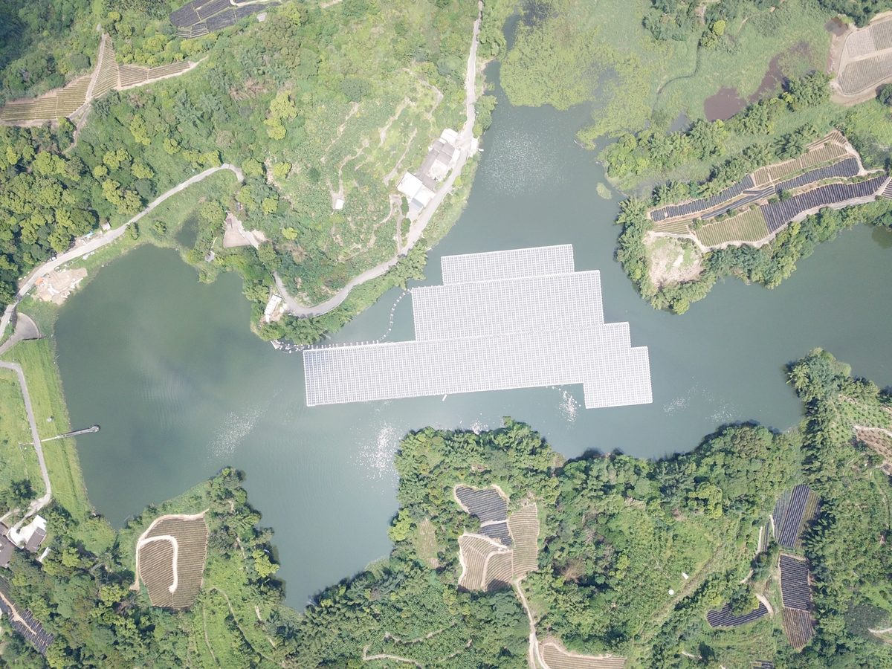

여러 마을이 함께 쓴 저수지, 수상태양광 참여는 부지 마을만…햇빛소득마을 기준 개선 요구

현행 공고는 행정리 안 부지만 인정하고 다른 행정리 부지는 연합조합 구성 조건…행안부 추진단, 올해 3차 선정까지 현행 기준 유지하고 내년 평가 반영 여부 검토
여러 마을이 수십 년간 농업용수를 함께 쓰고 관리해 온 저수지라도 햇빛소득마을 수상태양광 사업의 참여 자격이 행정마을 경계에 따라 갈린다며, 선정기준을 고쳐 달라는 요구가 나오고 있다. 현행 사업 공고는 발전소 부지가 해당 행정리 안에 있어야 하고, 다른 행정리 부지를 쓰려면 연합조합을 꾸리도록 하고 있다. 저수지 인근 주민들은 같은 법정리 안 행정마을들이 참여 여부와 사업구역, 발전용량을 스스로 협의해 정할 수 있게 해 달라고 국민신문고 등에 요청하고 있으며, 배분도 똑같이 나누기보다 농업용수 수혜 관계와 마을별 주민 수, 저수지와의 연관성을 반영하자고 주장한다. 행정안전부 햇빛소득마을추진단은 올해 3차 선정까지는 이미 공고한 기준으로 평가한다는 입장으로, 연합조합 규정은 부지가 있는 마을도 참여시켜 분쟁을 줄이려는 취지이고 다른 마을 부지를 쓰려면 그 마을의 동의와 참여가 원칙이라고 설명했다. 추진단은 20년 운영 기간에 뒤늦게 들어온 주민이 기존 합의에 이의를 제기할 가능성까지 따져야 한다며, 지방정부 의견을 모아 내년도 평가에서 이 문제를 다룰지 검토하겠다고 밝혔다.
시민에너지 관점
한 저수지의 물로 여러 마을이 함께 농사를 지어 왔다면, 그 수면에서 나는 햇빛 수익도 함께 나누는 것이 공유자원의 원리에 맞다. 참여 마을이 늘수록 합의가 어렵고 20년 사이 분쟁이 생길 수 있다는 걱정은, 처음부터 배분 원칙과 의사결정 규칙을 정관에 담은 연합 협동조합으로 풀 수 있다. 햇빛소득마을이 행정 경계가 아니라 실제로 물과 땅을 함께 써 온 생활권 공동체를 단위로 설계될 때, 수익은 갈등이 아니라 연대의 재료가 된다. 정부는 내년 공모 전에 수리계 같은 공동 관리 관계를 인정하는 연합 참여 지침을 마련해야 한다.
행정안전부 햇빛소득마을추진단은 내년도 평가 전에, 같은 저수지를 함께 써 온 행정마을들이 연합해 참여할 수 있는 지침을 마련해야 한다. 지방정부는 마을들의 의견을 모아 추진단에 전달하고, 마을 사이 협의를 도울 수 있다. 마을들은 배분을 농업용수 수혜 관계와 주민 수, 저수지와의 연관성에 따라 정하는 원칙을 연합 협동조합 정관에 미리 담아 둘 수 있다. 20년 운영 기간에 새로 들어오는 주민의 참여 방법도 정관에 정해 두면 뒤늦은 분쟁을 줄일 수 있다.
출처: 전기신문 2026-10-17 김진후 원문 보기
複数の集落がともに使ってきた貯水池、水上太陽光に参加できるのは用地の集落だけ…太陽光所得村の基準見直しを求める声
現行の公告は行政里内の用地のみを認め、他の行政里の用地は連合組合の結成が条件…行政安全部推進団は今年の第3次選定まで現行基準を維持し、来年の評価への反映を検討
複数の集落が数十年にわたって農業用水をともに使い、管理してきた貯水池であっても、太陽光所得村の水上太陽光事業への参加資格が行政上の集落の境界で分かれてしまうとして、選定基準の見直しを求める声が上がっている。現行の事業公告は、発電所の用地が当該の行政里の中になければならず、他の行政里の用地を使うには連合組合を結成するよう定めている。貯水池周辺の住民は、同じ法定里の中の行政集落どうしが参加の有無や事業区域、発電容量を自ら協議して決められるようにしてほしいと国民申聞鼓などに要望しており、配分も均等に分けるのではなく、農業用水の受益関係や集落ごとの住民数、貯水池との関わりを反映させるべきだと主張している。行政安全部の太陽光所得村推進団は、今年の第3次選定まではすでに公告した基準で評価するとの立場で、連合組合の規定は用地のある集落も参加させて紛争を減らす趣旨であり、他の集落の用地を使うにはその集落の同意と参加が原則だと説明した。推進団は、20年の運営期間中に後から加わった住民が既存の合意に異議を唱える可能性まで考える必要があるとし、地方自治体の意見を集めて、来年度の評価でこの問題を取り上げるかどうかを検討すると明らかにした。
市民エネルギーの視点
一つの貯水池の水で複数の集落がともに農業を営んできたのなら、その水面から生まれる太陽光の収益もともに分かち合うのが共有資源の原理にかなう。参加する集落が増えるほど合意が難しく、20年の間に紛争が起きかねないという心配は、最初から配分の原則と意思決定のルールを定款に盛り込んだ連合協同組合で解決できる。太陽光所得村が行政の境界ではなく、実際に水と土地をともに使ってきた生活圏の共同体を単位に設計されてこそ、収益は対立ではなく連帯の材料になる。政府は来年の公募の前に、水利契のような共同管理の関係を認める連合参加の指針を整えるべきだ。
行政安全部の太陽光所得村推進団は、来年度の評価の前に、同じ貯水池をともに使ってきた行政上の集落が連合して参加できる指針を整えるべきだ。地方政府は集落の意見を取りまとめて推進団に伝え、集落どうしの協議を手助けできる。集落は、配分を農業用水の受益関係や住民数、貯水池とのつながりに応じて決める原則を、連合協同組合の定款にあらかじめ盛り込んでおける。20年の運営期間中に新たに加わる住民の参加方法も定款で定めておけば、後からの紛争を減らせる。
出典: Electric Times (Jeongi Sinmun) 2026-10-17 Kim Jin-hu 原文を読む
多个村庄共用的水库，只有场地所在村能参与水面太阳能…阳光收入村标准遭要求修改
现行公告只认可行政里内的场地，使用其他行政里场地须组建联合合作社…行政安全部推进团表示今年第三轮评选前维持现行标准，并研究是否在明年评审中反映
有人提出，即便是多个村庄几十年来共同使用和管理农业用水的水库，阳光收入村水面太阳能项目的参与资格也会按行政村边界划分，因此要求修改评选标准。现行项目公告规定，电站场地必须位于该行政里范围内，若使用其他行政里的场地，则须组建联合合作社。水库周边居民正通过国民申闻鼓等渠道提出要求，希望同一法定里内的各行政村能自行协商决定是否参与、项目区域和装机容量；在分配上，他们也主张不搞平均分配，而是反映农业用水受益关系、各村人口和与水库的关联程度。行政安全部阳光收入村推进团表示，今年第三轮评选前仍按已公告的标准评审，联合合作社规定的目的是让场地所在村也参与进来以减少纠纷，使用其他村的场地原则上须取得该村的同意并让其参与。推进团还表示，在20年的运营期内，后来的居民可能对既有协议提出异议，这一点也需要考虑，并将收集地方政府意见，研究是否在明年的评审中讨论这一问题。
市民能源视角
如果多个村庄一直靠同一座水库的水一起种地，那么共同分享这片水面产生的阳光收益，才符合公共资源的原理。至于参与村庄越多越难达成共识、20年间可能产生纠纷的担忧，可以通过一开始就把分配原则和决策规则写入章程的联合合作社来解决。只有当阳光收入村不以行政边界、而以真正共同用水用地的生活圈共同体为单位来设计时，收益才会成为团结而不是冲突的材料。政府应在明年招募之前，制定承认水利契等共同管理关系的联合参与指南。
行政安全部阳光收入村推进团应在明年评审之前，制定让共同使用同一水库的行政村能够联合参与的指南。地方政府可以汇总各村意见转交推进团，并协助村庄之间的协商。各村可以预先在联合合作社章程中写明按农业用水受益关系、居民人数和与水库的关联程度来确定分配的原则。如果在章程中规定20年运营期内新迁入居民的参与方式，也能减少日后的纠纷。
来源: Electric Times (Jeongi Sinmun) 2026-10-17 Kim Jin-hu 查看原文
Reservoirs shared by several villages, but only the site village can join floating solar: calls grow to revise Sunlight Income Village rules
Current notices accept only sites inside the administrative village and require a joint cooperative for sites in another village; the interior ministry task force keeps the rules through this year's third round and will consider changes for next year's evaluation
Residents are calling for changes to the selection rules for Sunlight Income Village floating solar projects, saying that eligibility is split along administrative village boundaries even for reservoirs that several villages have used and managed together for irrigation for decades. The current project notice requires a plant site to lie within the administrative village concerned, and villages using a site in another administrative village must form a joint cooperative. Residents near reservoirs have filed requests through the government's online petition system and elsewhere asking that administrative villages within the same legal village be allowed to decide among themselves whether to take part, the project area and capacity, and they argue that shares should reflect irrigation benefits, each village's population and its ties to the reservoir rather than being split equally. The Ministry of the Interior and Safety's Sunlight Income Village task force says it will evaluate applications under the published rules through this year's third round, explaining that the joint cooperative rule is meant to reduce disputes by including the village where the site is located, and that using another village's site in principle requires that village's consent and participation. The task force said it must also consider the possibility that residents who arrive later during the 20-year operating period could challenge existing agreements, and that it will gather local government views and consider whether to take up the issue in next year's evaluation.
Citizen Energy View
If several villages have farmed together with water from one reservoir, sharing the solar revenue from its surface is in keeping with the principle of a commons. Worries that agreement becomes harder as more villages join, or that disputes could arise over 20 years, can be addressed through a joint cooperative whose bylaws set out sharing principles and decision rules from the start. When Sunlight Income Villages are designed around the real communities that have shared water and land, rather than administrative lines, revenue becomes material for solidarity instead of conflict. Before next year's call for applications, the government should issue guidelines for joint participation that recognize shared management arrangements such as irrigation associations.
Before next year's evaluation, the Ministry of the Interior and Safety's Sunlight Income Village task force should issue guidelines that let administrative villages that have shared the same reservoir take part jointly. Local governments can gather the villages' views, pass them on to the task force and help the villages negotiate with one another. The villages can write into the bylaws of a joint cooperative, in advance, a rule for dividing shares according to irrigation use, population and each village's ties to the reservoir. Setting out in the bylaws how newcomers can join during the 20-year operating period would also reduce disputes later on.
Source: Electric Times (Jeongi Sinmun) 2026-10-17 Kim Jin-hu Read the original